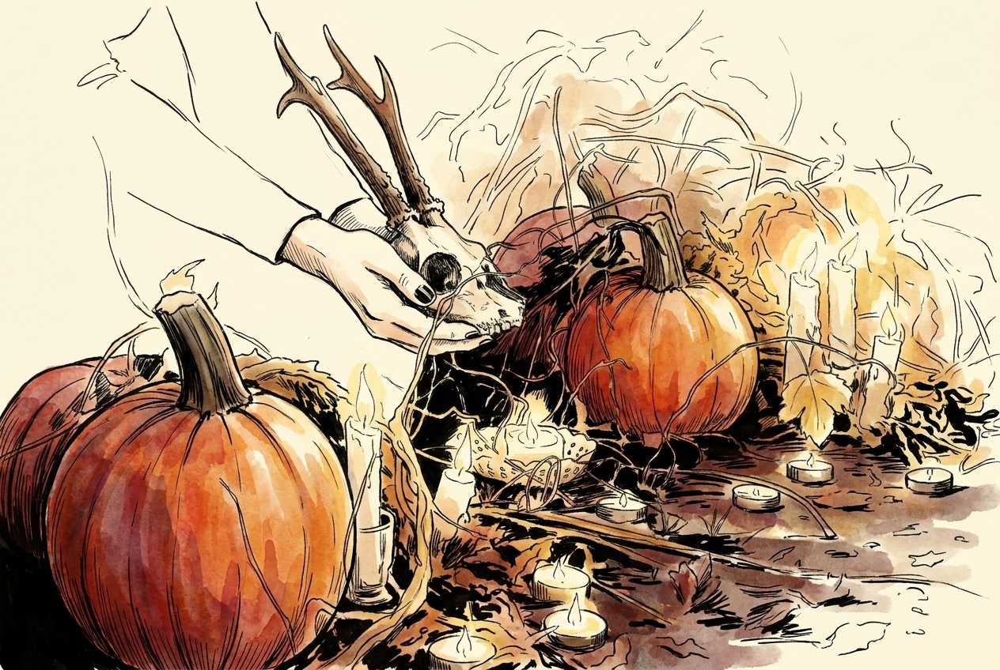
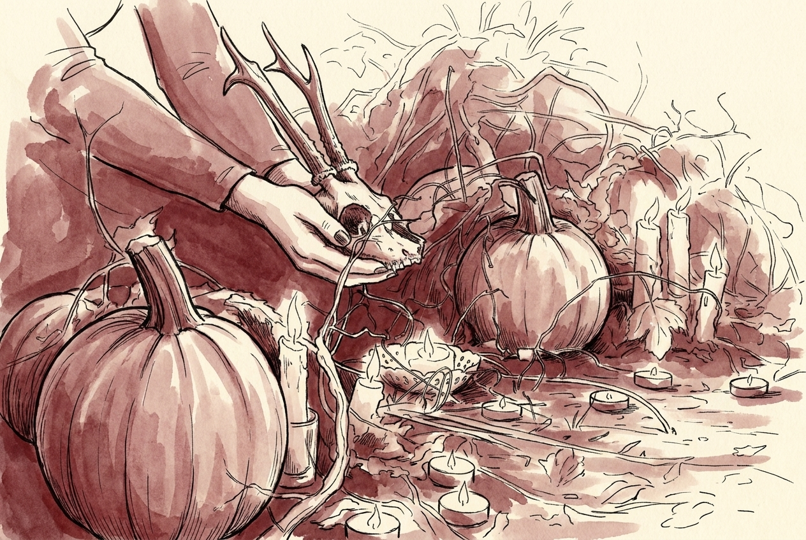
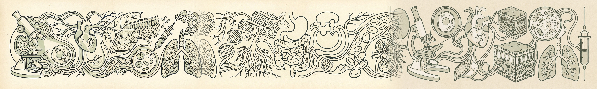
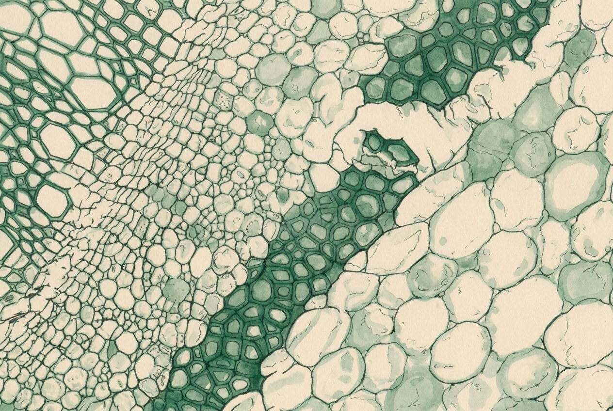

Left is the current refined render (wash follows the photo's own colours). Right is the prototype where the wash is anchored to the subject's set accent colour, used thematically so a subject's units read as one tonal family. Same composition either way.
accent #7d3737 — burgundy


accent #368352 — emerald

